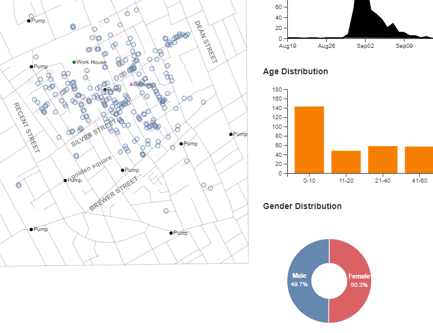

-
Documentation
About Map
The map of London's cholera pandemic from 1854 was created using Java script and the provided coordinates. On the map, the breweries were marked with pink dots, the workhouses with green dots, and all the pumps with black dots. Javascript was used to label the main streets on the map where there have been the most fatalities.
On map we can observe that most of the deaths are near silver street. Along with map deaths time line chart, age distrubution and pie chart of gender distribution was created on dashboard. Zoom in and out option is also added to locate thre individuals clearly.
Interactions
The density map, which is labeled by weekly, represents the death time lines for each day. The number of fatalities and specific areas on the map will be displayed through an interaction that was designed. The gender is also represented by blue and red circles on the pie chart, as seen on the map. A bar plot was used with labelling and displaying the percentage and count of that particular age group to explain how the ages were distributed.
below image represents the selection of particular area on the death time line density plot represents the location of the deaths and gender.

According to observations, the age group between 11-20 had the lowest death rate, and those over 80 had the highest.
In the pie chart, the color blue denotes the percentage of males, while the color red denotes the percentage of females. When we mouseover the men, the total number of males and their location is shown on the map as an interaction.

Findings
The maximum number of deaths are occured near brewery and one pump. one of the majorly effected street is silver street. In the month of september number of deaths rate has been increased.
As we can see wehn we point over on the gender distribution the total number of males and females are almost equally distributed. so, considering them for any kind of analysis will not give efficient results.
References:
• W3Schools free online web tutorials. (n.d.). Retrieved December 2, 2022, from https://www.w3schools.com/
• Where developers learn, share, & build careers. (n.d.). Retrieved December 2, 2022, from https://stackoverflow.com/
As we can see wehn we point over on the gender distribution the total number of males and females are almost equally distributed. so, considering them for any kind of analysis will not give efficient results.